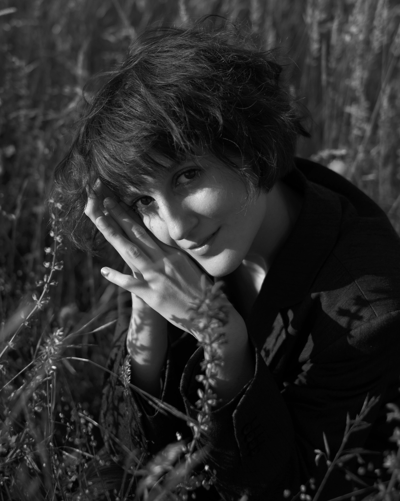

Teodora Apostolescu is a junior photographer who was born in 2001 in Munich and has been living there ever since.
In the past couple of years her focus layed on street photography, not only in her hometown but cities she's travelled like Marseille, Thessaloniki or Vienna. She has started to photograph and portray strangers on the street of the cities she visited and is looking forward to pursueing to do so.
In 2021 she started a B.A. in Photography in Design in her hometown, which allows her to expand her knowledge and view on and about photography.
She's currently engaging more in reproducing photographs in the darkroom as well as developing film on her own, due to her love for analogue photography.
She is looking forward to combine her passion for photography with topics reaching from queerness and feminism to policy issues and her origin in romania.

In the past couple of years her focus layed on street photography, not only in her hometown but cities she's travelled like Marseille, Thessaloniki or Vienna. She has started to photograph and portray strangers on the street of the cities she visited and is looking forward to pursueing to do so.
In 2021 she started a B.A. in Photography in Design in her hometown, which allows her to expand her knowledge and view on and about photography.
She's currently engaging more in reproducing photographs in the darkroom as well as developing film on her own, due to her love for analogue photography.
She is looking forward to combine her passion for photography with topics reaching from queerness and feminism to policy issues and her origin in romania.